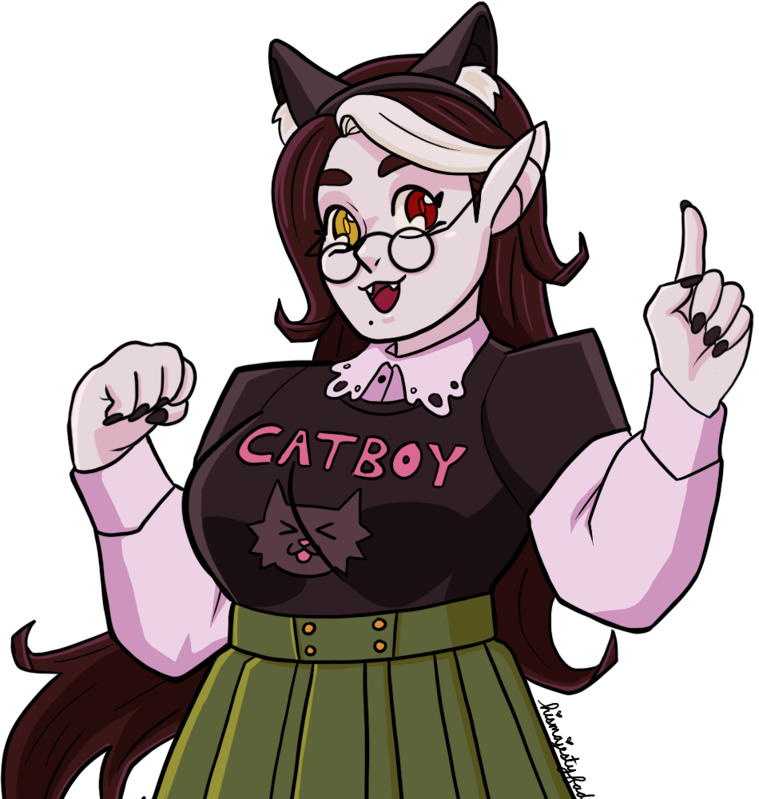
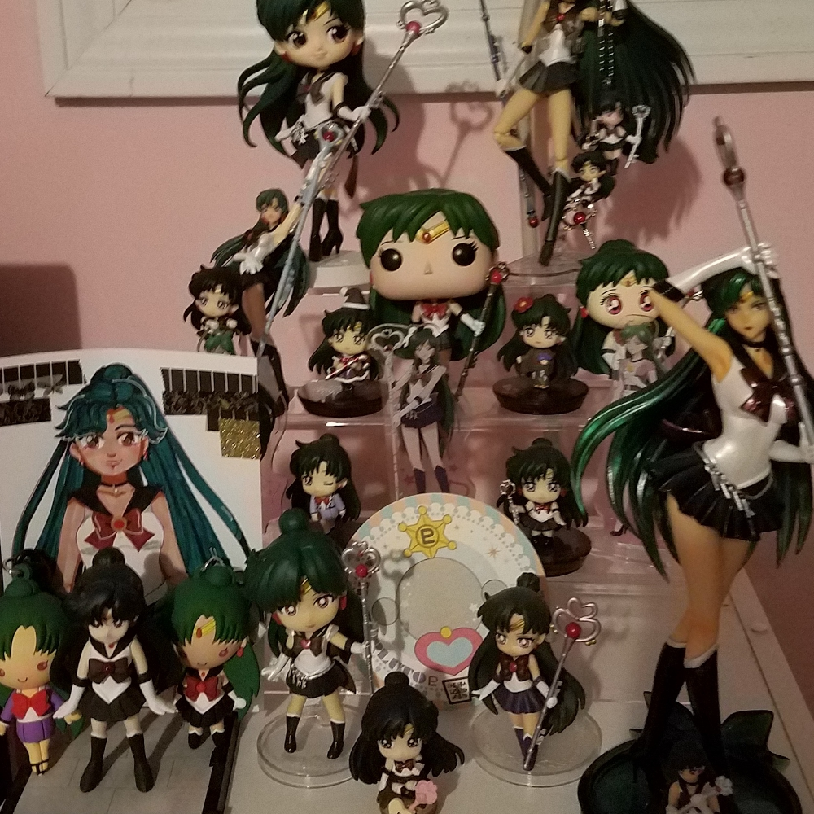

About Me
Hi! I'm Gabriel. I like to think I'm decent at using computers. My ultimate goal is library science, but my current studies are in medieval history and general English literature, particularly Victorian era pop culture. In my spare time I play video games, draw, and collect anime figurines.
 Here's an example of some art I did!
 And here's some of my figurine collection!